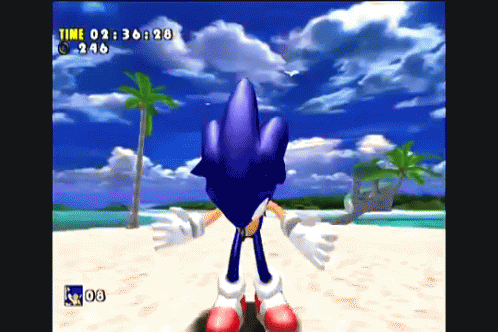
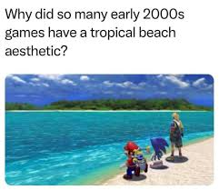

+ Lets start from the beginning... +
When I was a kid, I tend to draw whatever I see: flowers, my mom's paintings and pictures from various magazines but nothing really "stuck" with me.
That was until, I met this funny blue rat thing.(Pictured Below)

Since then, I started drawing this guy more often and been heavily influenced by the series' art style and a "beach-y aesthetic”
that were very popularized in video game media during the late 90s/early 2000s like.
You're probably asking...

...Not sure but I do know what kind of art I wanted to create: recreating that sense of relaxation and nostalgia, created by a fan for the fans!
Now that I found my first art inspiration, my art journey was about to start!
Click the Chao creature below to continue the NET ART experience!